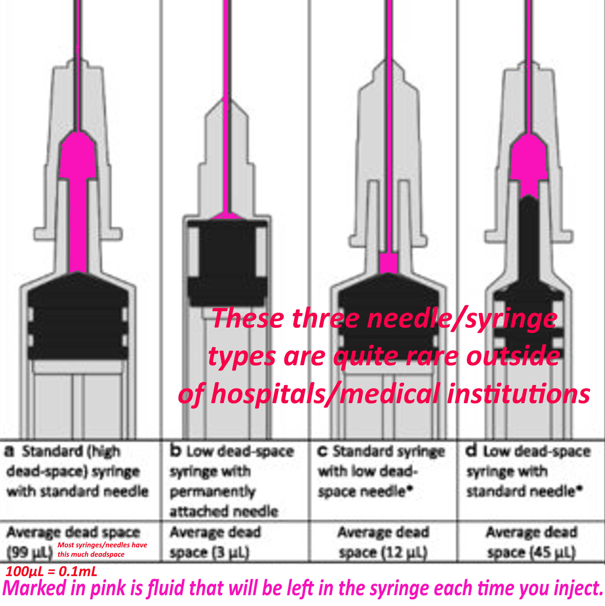

Transfeminine DIY HRT: the Ultimate Guide
Last updated February 2024
üìù Contents:
- What is HRT?
- What does it do?
- Accessing Prescribed HRT vs DIY
- What are the different types of antiandrogens?
- What forms of estradiol are there?
- What are the potential side effects or risks?
- Dosing
- Blood Testing
- HRT Sources
- Frequently Asked Questions
What is HRT?
HRT stands for hormone replacement therapy.
For transfeminine people, this usually means trying to replicate the hormones found in cisgender women.
People
who are assigned male at birth (AMAB) will have higher testosterone levels and lower estradiol (estrogen)
levels
compared to those assigned female at birth (AFAB).
The purpose of HRT is to decrease testosterone levels and raise estradiol levels to levels comparable to
that of
healthy cis females. This is usually accomplished using antiandrogens (blocks testosterone and prevents
masculinization) and estradiol (causes feminization).
In this guide, you will see the terms estradiol and estrogen used interchangeably. Estradiol is the main human
female sex hormone, and is a type of estrogen. Traditionally, you don't directly administer types of estrogens
other than estradiol (E2), so the rest are not relevant for this guide to discuss. Estradiol is later metabolized
by your body into esterone (E1) and estriol (E3), and these are optional blood tests that you can get, but aren't
necessary.
What does it do?
HRT will give a myriad of changes. Here is a chart showing all of the changes you can expect, along with
typical onset times and when effects reach their maximum.
Keep in mind that all forms of HRT will likely make you infertile, possibly irreversibly. Consider sperm banking if this is a concern.

Accessing Prescribed HRT vs DIY:
Prescribed HRT:
If you are in the US: you can try informed consent (Planned Parenthood locations offer this service), or
any endocrinologist that allows it. Informed consent is essentially an easier method of obtaining HRT without having to
go through multiple psychologist/psychiatrist assessments (essentially having to 'prove' your transness), or be actually diagnosed with gender dysphoria. You just sign a consent form and
that's it.
You have to be 18+ to access informed consent services in the USA.
Here is a community-compiled worldwide map that shows clinics offering informed consent:
Erin's Informed Consent Map
with particular focus on clinics in the USA.
Many new mobile apps and telehealth services in the USA also offer informed consent access to HRT, see this short document for a full list for all current app/telehealth HRT services in the USA:
diyhrt.wiki/apps.
To save on prescribed HRT in the USA, try goodrx.com for
free
coupons to use at participating pharmacies. There are no strings attached to this service! Cost Plus Drugs is also a good source
for affordable medications delivered to you by mail if you have a doctor's prescription.
You have to be 18+ to access informed consent services in Australia.
Dr Johnathan Hayes (click here) is an Endocrinologist in St. Leonards that offers
Informed consent.
If you are in the UK: GenderGP (if you can afford it) is a private healthcare service aiding transgender
people in getting on HRT. It uses a model similar to informed consent and asks about your plan for transition.
Unfortunately, they have a bit of a reputation for giving rather undesirable dosing regimens and not following clinical guidelines, and can be quite
expensive.
Beyond this point, this guide will focus exclusively on how to safely dose, source, and administer DIY HRT.
DIY:
DIY HRT refers to any HRT that is obtained without a prescription.
Ideally, you would be on prescribed HRT through legit means. However, you may not have the privilege or
means to access prescribed HRT, so this guide may be of use for you.
If you are willing to attempt DIY, it is a preferable option to not being on HRT for many.
If you do not want to be on waitlists, have to prove your transness while allowing your body to masculinize,
or are unable to get HRT legally, DIY may be preferable.
Depending on where you order from, you may need to find out how to buy Bitcoin/other cryptocurrencies or find
a way to send an international bank transfer, Moneygram, etc.
In some countries, HRT medications are sold over the counter
without the need for a prescription.
For the majority of individuals, DIY HRT commonly entails buying legitimate pharmaceutical-grade medications
from foreign companies located in countries that permit the sale of medications internationally.
Homebrewed vs Pharmaceutical Grade?
Homebrewed - Refers to HRT produced by individuals, by sourcing raw estradiol
ester/bicalutamide/etc powder and compounding the medication themselves. They do not synthesize (create
from scratch) hormones. While the concept sounds scary, there are a couple well respected members of the community
that produce high quality and safe HRT medications. However, homebrew will always carry more inherent risk,
so keep this in mind.
Pharmaceutical grade - Refers to HRT produced by legitimate pharmaceutical
companies
that are licensed and subject to regulation. They are the same quality as those found in your local
pharmacy.
They can be ordered without a prescription from companies that are based in countries that allow for the legal
exportation
of such medications. These will almost always carry less inherent risk versus homebrewed hormones.
If you want to acquire DIY injections that aren't prohibitively expensive/difficult to source, homebrewed
injections are the only options available.
It is highly recommended to always try to order from non-homebrew sources unless cost or logistical concerns make it
unfeasible to order from pharmaceutical grade sources. Pharmaceutical grade HRT is always safer, and we highly recommend you choose
to buy from these sources. 90%+ of trans feminine people who are on DIY HRT order from pharmaceutical grade sources.
What forms of estradiol are there?
There are many forms of estradiol, each with their drawbacks, pros, and
levels of ease in terms of obtaining them.
This section does not cover dosing (see the Dosing section for more information). Given prices
are
rough estimates for DIY sourced HRT.
Prices below are in $USD. Shipping usually goes between $10-35 USD depending on the source. It's best to order
at
least several months worth at once to offset the shipping costs.
Pills - $20-$40 per month ($240-480 per year)
By far the most popular and well known, pills are the easiest to come by if you choose to DIY.
Unfortunately,
they tend to be somewhat expensive. Choose bioidentical estrogens (bioidentical means the pills contain the
exact same estrogen produced by human bodies).
Bioidentical estradiol pills usually come in three forms:
Estradiol hemihydrate (e.g. Estrofem, Estrace) is equivalent to estradiol (mostly sold by
homebrewers). Estradiol valerate may also be found in pills. (ex: Progynova) Estradiol valerate has
about
75% of the potency of estradiol or estradiol hemihydrate.
Avoid non-bioidentical estrogens such as Premarin or Ethinylestradiol (EE). These carry elevated
thromboembolism (blood clot) risks compared to bioidentical estrogens.
Pills also tend to be quite convenient to take. Also very easy to acquire if you choose to DIY.
Oral pills:
Oral intake is simply swallowing your pills. Usually twice per day in ~12 hour intervals.
Results in more stable levels versus sublingual/buccal administration.
Sublingual/Buccal pills:
Sublingual intake refers to placing a tablet under the tongue and letting it dissolve, and buccal intake
refers
to placing a tablet between your gum and the inside of your cheek to dissolve. These two administration
methods
are interchangeable and have essentially the same results.
Sublingual/Buccal administration causes higher peak levels of estradiol in the blood that quickly dissipate.
Because of this, it is recommended that sublingual administration be three (or more) times a day, in 8 hour
intervals.
Transdermal - $30-$45 per month ($360-540 per year)(patches)
Transdermal (estradiol applied to the skin) comes in forms like gels, patches, solutions, etc.
Patches are typically switched out once to twice a week and are designed to give out a set dose of estradiol
every
day. Usually applied to the lower stomach or upper buttocks.
Prescribed gels typically come in packets or in a pump that dispenses a set amount each time.
Estradiol
gels are compounded in an alcohol base to increase absorption. Usually applied to the skin once per day.
Squeeze
tube style gels that aren't properly dosed are not recommended due to difficulty of accurate dosing.
Unfortunately most gels available from DIY sources are in this category.
Solutions are usually sold from homebrewers, containing estradiol in an alcohol-based solution that
is
applied to the skin, usually in an eyedropper style bottle.
Estrogen Creams are not very relevant to transfeminine people because of the low absorption rate into
the
bloodstream and the difficulty of accurate dosing.
Injections - $100-$200 per year
There are certain esters estradiol is commonly compounded in. Estradiol is esterified in order to last
longer in
your body.
Raw estradiol injected into your tissues will very quickly dissipate, which is why estradiol injections all
come
in ester form. It's still just estradiol, your body just slowly converts it into estradiol from its
esterified
form.
Estradiol valerate, estradiol cypionate and estradiol enanthate are the most commonly prescribed and
used
estradiol esters. They all have different half lives (time it lasts inside the body before half the
medication
is metabolized).
Assuming you inject the same amount of estradiol, esters with shorter half lives mean the levels of
estradiol in
your blood and tissues will be higher, but for a shorter period of time.
An ester with a longer half life means you will have to inject a bit more to get to those same peak levels,
but
also means you can inject less frequently.
Estradiol Valerate's (EV) half life is about 3.0 days. EV should be injected every 5 days.
Estradiol Cypionate's (EC) half life is about 6.7 days. EC should be injected every 7 days.
Estradiol Enanthate's (EEn) half life is about 4.6 days. Although research suggests that the peak of
EEn
comes later than EC. Essentially, treat EEn as similar to EC, with EEn possibly lasting longer. EEn
should be injected every 7-10 days.
Detailed information on estradiol injection dosing will be found later in this guide in the Estradiol injection dosing section.
Valerate is typically prescribed by doctors, with cypionate being occasionally prescribed. Cypionate and
Enanthate are most commonly found sold by homebrew estrogen sellers.
Pellets - N/A
Estradiol pellets are implanted into the body (usually the butt) and slowly release estrogen into your body over the course of many months.
This cannot be found from DIY sources (obviously).
These are more experimental in terms of dosages compared to the other more common methods. You can get
them
implanted if your insurance covers it (or if you're very wealthy). Because they slowly dissolve and release estrogen over time, you don't have to worry
about missing a dose.
They last about 3-6 months. Most doctors that offer pellets compound them to give a patient
quite a high dosage of estradiol.
What are the different types of antiandrogens?
⚠️ Note:
All of these should be swallowed unless stated otherwise.
Spironolactone (AKA Spiro) - $10-20 per month
Spironolactone is a weak antiandrogen, albeit quite safe.
Common side effects include increased thirst, salt cravings and frequent urination.
Can be taken alongside a regular HRT regimen as an experimental erection-prevention drug if getting
erections is
bothersome due to its blood pressure lowering effects (recommend 100-400mg/day¹ for this (start low)).
Not recommended as a first choice of antiandrogen due to its weak anti antiandrogenic effects.
❗ If you are currently taking spironolactone, and your total testosterone (T) levels are under ~30ng/dL,
you
can almost certainly stop taking spiro at that point. The estradiol is doing most of the work of suppressing
your T.
Cyproterone acetate (AKA Cyproterone, Cypro) - $5-20 per month
Cyproterone is a very effective antiandrogen when combined with estrogen.
High doses should be avoided due to a harsher risk profile.
Keeping under a certain dosage is important, especially considering that cyproterone is usually sold in
dosages
4-8 times that of recommended dosages for transfeminine individuals (get a pill cutter!).
Bicalutamide (AKA Bica) - $15-40 per month
Bicalutamide is a very effective antiandrogen, moreso when paired with estrogen. It works in a unique way by
preventing testosterone from having an effect on your body, but it does not actually prevent your body from
producing testosterone. Ironically, this will increase your blood testosterone levels (your body thinks that
you
have zero testosterone inside you and tells your testes to produce even more), but don't worry, all that
extra
testosterone can't do anything.
People tend to report bica being better at preserving penile function, libido and semen volume better versus
other antiandrogens.
In cis male prostate cancer patients, bicalutamide has about a 1/4000 chance of causing either severe liver or
severe lung toxicity. All published case reports of either severe liver or lung toxicity have been in cis men
over 59 years of age. Despite this, it's likely that trans women still face a much lower but still present risk.
It's strongly recommended to get liver function tests every 3 months if you take bicalutamide.
GNRH Agonists - $270 per year (For Busrelin)
Extremely safe and effective antiandrogens that prevent your testes from producing testosterone. Commonly referred to as puberty blockers, they work just as well at blocking T for people who have gone through a full AMAB/testosterone puberty.
Unfortunately the most powerful forms are not available from DIY sources due to being prohibitively expensive.
An GNRH agonist called buserelin can be found DIY, but its administration method can be quite annoying (sprayed into the nostrils 3 times a day).
Estradiol Monotherapy - $100-$200 per year
Monotherapy means to only use one type of medication. As such, estradiol monotherapy means using only high doses of estradiol
to suppress your body's testosterone production, as estradiol itself functions as an antiandrogen.
High enough levels of estradiol in the body is enough to cause your body's testosterone production to lower
significantly. This is usually only easily achievable with estradiol injections, which allow a person to
more easily achieve high estradiol levels versus other methods of administration.
Some people are able to maintain an estradiol monotherapy regimen using transdermal estrogens, but this
is less consistent and more difficult to achieve. Transdermal estradiol monotherapy is not recommended due to these reasons.
Attempting estradiol monotherapy using non-injectable or transdermal forms of estradiol such as pills carry an elevated risk of
blood clotting, and we recommend you do not try this.
The vast majority of people on a decent estradiol injection monotherapy regimen (only taking estrogen, no
antiandrogen) are able to suppress testosterone levels adequately without needing to take antiandrogens.
Side Effects/risks:
⚠️ Important Note:
When you google a medication talked about here, you will probably see a massive list of side effects, in the context of antiandrogens, most of these effects (like hot flashes, fatigue, bone density loss, etc.) are actually just side effects of sex hormone deprivation seen in cis men who take antiandrogens without an estrogen for the treatment of prostate cancer. You will not see the effects of sex hormone deprivation if you take estrogen with your antiandrogens.
All recommended tests mentioned in this section can be tested from blood samples taken during a regular blood test. You don't have to get fancy expensive tests.
Estradiol
All forms of estrogen will increase your risk of blood clots (thromboembolism), including serious
blood
clots (e.g. deep vein thrombosis, pulmonary embolism). The likelihood of this is still very low in absolute
risk
but it is present. The risk of getting blood clots on HRT is essentially comparable to that of cis
women
if you take a modest HRT regimen.
Higher levels of estradiol means higher blood clot risk.
Assuming the exact same blood levels of estradiol, taking oral estradiol will carry a higher risk of causing
blood clots versus other forms of administration (due to oral estradiol being metabolized through the liver).
However, because of the higher levels of estradiol in your blood that other methods usually result in
(transdermal, injections, etc.), the unique risks of oral estradiol aren't particularly relevant in
practice.
Spironolactone:
The main reason I recommend against spironolactone is because spiro is a very weak antiandrogen. There are
just
better options out there.
However, it's very safe, but common side effects include increased thirst, salt cravings and frequent
urination
due to it being a diuretic (makes your body get rid of water faster).
Spiro is also known to reduce blood pressure, which can make it hard for some people to attain erections.
Ideally you should get U&E (urea and electrolytes) tested for (see if you're dehydrated, basically) if you
are
on spiro.
If you are predisposed to developing hyperkalemia (elevated potassium levels), you should also get your potassium levels
tested regularly if you take spironolactone, as spiro can cause your body to retain more potassium.
For the vast majority of people though, this is not a relevant concern.
Cyproterone acetate:
Extremely high doses of cyproterone, mostly found above 50mg/day and 100mg/day can cause a myriad of
different
harsh side effects and risks, mainly prolactinomas and meningiomas (small benign brain tumors).
At dosages relevant to transfeminine people (6.25-12.5mg/day) the risk profile is much different. The same
risks
are still present but much lower at smaller doses.
Cyproterone is also known to slightly increase blood clot risk, although the increase in risk is quite low
at
dosages used in trans people.
Cypro may increase the risk of B12 deficiency and slightly increase depression risk. Despite the relative
safety
at these doses, ideally you should still get prolactin (PRL) and B12 tested to make sure it's within a
healthy
range. These risks are cumulative (risks gradually get higher the longer you stay on cyproterone).
Bicalutamide:
Due to dysphoria, some transfeminine people do not want to experience a higher libido and an easier time
getting
erections. These are things that bica tends to preserve better than other antiandrogens. Some may see this
as a
beneficial effect, however.
The main risk of bicalutamide is severe liver toxicity and lung toxicity. The chances of either happening
are about 1/4000 in cis male prostate cancer patients. All published case reports of either severe liver
or lung toxicity have been in cis men over 59 years of age. Risk of liver toxicity can be monitored if
you get regular liver function tests every 3 months or so (done by analyzing blood from a regular blood test sample).
After a year of normal liver function tests, you can stop taking them. The risks of bicalutamide after a
period
of time with no side effects are known to not be cumulative (you can confidently assume that your risk of
lung/liver toxicity will not increase over time if it's already been a period of time without symptoms).
The
risk of both lung and liver toxicity is essentially zero after a year without issues.
Out of the millions of men who have taken bicalutamide for prostate cancer treatment, there have been a few
reported cases where bicalutamide induced a severe light sensitivity condition. Again, the risk for this
does
not seem to be cumulative after a period of time with no symptoms.
Despite these possible side effects, the absolute risk of any severe outcomes occurring on bicalutamide is
extremely low. With the added benefit that bica has essentially no common side effects like spiro or cypro.
GNRH Agonists:
If you have already gone through an AMAB/testosterone puberty, you will experience a temporary flareup of testosterone when you start taking a GNRH agonist for the first time. If you want to avoid this temporary T flare up, you can take cyproterone or bicalutamide for the first 3 weeks of use. You can also double the recommended dose of buserelin during the first week (see the Busrelin section under Dosing).
More information on blood testing will be found later in this guide in the Blood Testing section.
Hormone therapy in general is very safe and effective as long as you take a reasonable dose.
Dosing:
For regimens with antiandrogens:
There is usually no reason to start HRT on a lower than normal dose of antiandrogen, you should go directly
onto a standard dose of antiandrogen and adjust accordingly if needed.
For regimens with oral or sublingual/buccal estradiol:
To accurately dose pills you may need to buy a pill cutter (Amazon or any local pharmacy sells them). Check your
HRT pill type to see if your pills need to be split a certain way for your preferred dosages (e.g. if you're taking
2mg of estradiol three times a day, and you only have 4mg pills, you will need to cut your pills into 2mg doses).
Any regimen:
There's no strong evidence to suggest that starting on a low dose of estradiol and slowly raising your
dose
is necessarily better than starting on a moderate dose. There are anecdotes and theories floating around
that suggest that you may get better breast development or feminization if you start low and slowly ramp
up
your dose. Despite the lack of clinical data and evidence, there's no real harm in doing this. Feel free
to
experiment if you wish.
Antiandrogen + estradiol dosing:
The following example regimens use typical doses of estradiol on the higher end of what would be considered a moderate dose. Adjust accordingly if you have access to blood testing (see blood testing section above).
If you take cyproterone, you will need a pill cutter! (Pill cutters are sold at any pharmacy over
the
counter or online from sites like Amazon). Cyproterone tablets are almost always 25mg-50mg tablets (way over
a recommended dose). Not recommended to go above 12.5mg of cyproterone daily. Increase estrogen dosage
if testosterone is not adequately suppressed instead.
Oral estradiol:
Sublingual estradiol:
Estradiol Patches:
Estradiol gel:
Reminder! Bicalutamide may cause blood testosterone levels to increase slightly, so even though your T may be adequately blocked, your testosterone levels on a blood test will likely show quite high levels. Bicalutamide also has a long half life, which means it doesn't really matter what time you take it every day, as long as you take it every day. 50mg is almost always enough to ensure adequate testosterone suppression when combined with estradiol.
Oral estradiol:
Sublingual estradiol:
Estradiol Patches:
Estradiol gel:
Buserelin (sometimes sold as the brand name 'Suprefact') has a short half life, so it should be
administered
three times a day to be effective. You can double the recommended dose of buserelin during the first week to
counteract the testosterone flare effect that GNRH Agonists have. Alternatively, you can take cyproterone or
bicalutamide for the first three weeks on buserelin.
Buserelin comes in a bottle that dispenses a set amount of medicine with each spray (300μg per spray in
these
examples).
Oral estradiol:
Sublingual estradiol:
Estradiol Patches:
Estradiol gel:
Injection Monotherapy dosing/Accurate injection dosing:
Here are some reasonable dosages for estradiol injections used in transfeminine hormone therapy:
These dosages should give the vast majority of people high enough estradiol levels to suppress testosterone on its own.
Adjust accordingly if you have access to blood testing (see Blood Testing section below). Ideally you
should be aiming for the lowest possible estradiol levels (that are still above 100pg/mL at trough) that still adequately
suppress testosterone <50ng/dL at trough. Though people usually require trough estradiol levels of 200-250pg/mL to adequately suppress testosterone.
('Trough' refers to your blood levels at the lowest point of your dosage regimen, which is right before you take your next dose. This will be explained in more detail in the Blood Testing section below)
Vials of estradiol are usually compounded at either 5mg/mL, 10mg/mL, 20mg/mL or 40mg/mL.
This means that for a 40mg/mL vial, every 1mL of liquid will contain 40mg of estradiol. A 40mg/mL 10mL vial
will
then contain a total of 400mg of estradiol.
Homebrewed vials are usually compounded at 40mg/mL.
We will unfortunately be doing some math here.
The formula to calculate how much liquid to inject is: (amount you want to inject) ÷ (concentration of
the
vial) = amount to inject per dose in mL
4 ÷ 40 = 0.1
0.1mL per injection
5 ÷ 40 ≈ 0.13mL
0.13mL per injection
8 ÷ 40 = 0.2
0.2mL per injection
10 ÷ 40 = 0.25
0.25mL per injection
10 ÷ 10 = 1
1mL per injection
10 ÷ 20 = 0.5
0.5mL per injection
Not too complicated now, hopefully!
Note: Be sure to dispose of your needle tips inside of a hard plastic container or a sharps bin to prevent injury!
Cost of needles/syringes - $1-$3 dollars per injection/$50-160 per year (depends on how much you buy
at a
time). Check out our sources for good injection supplies
here.
Needles can be bought from any pharmacy over the counter in most countries without a prescription (you may
have
to ask the pharmacist directly).
Most countries also have online sites that sell appropriate injection needles. Amazon is a popular source
for
those in America.
You can also check medical supply sites, which usually have the cheapest prices if buying large quantities.
Make sure to buy 1mL syringes, as the small amounts of fluid we are using for each injection are only
easily measured with 1mL syringes. The more common 3mL syringes will still work if you cannot find 1mL
syringes,
but are not ideal.
There are two methods for an E injection, subcutaneous/subq⁶ (injection into the layer of fat under
the
skin), and intramuscular/IM (injection deep into the muscle underneath the skin and fat). Both
methods
result in identical absorption rates and levels of the drug, whether you prefer subq or IM is mostly
personal
preference.
Homebrewed injections typically contain benzyl benzoate (a safe solvent that is also commonly used in prescription grade medications),
which can cause some minor irritation if injected subcuaneously. Usually there will be less post-injection pain if injected intramuscularly.
Appropriate gauges (needle thickness) for a subcutaneous injection are 25-30g, for intramuscular, 23-25g.
Subq
needles are thinner than IM needles, which some people find less intimidating.
Recommended needle lengths are as follows:
1”-1 ½” (IM, 1 inch is better for thinner people and 1 ½” for thicker people)
½”-⅝” (Subq, up to personal preference)
There are many online videos and guides for how to administer an intramuscular or subcutaneous injection,
here are a few decent ones:
https://members.getplume.co/support/solutions/articles/72000544742-all-about-injections#Injection-video-tutorials
Extremely detailed video guides on both IM and subq injections, with the downside that they are split into multiple long videos. Slightly less professional but shorter guide videos are below:
https://www.youtube.com/watch?v=APSPbpqefKw
https://www.youtube.com/watch?v=W5GAyZzDpNU
Note that around 0.1mL of fluid will be lost with each injection due to needle dead space. 
Blood Testing:
$50-$150 per test, depending on source
Regular blood testing every ~3 months or so is useful, but not absolutely mandatory³, especially if
not
particularly affordable or feasible. Here are some sources of private blood testing⁴ if you cannot access
blood
testing through the medical system:
(USA): https://www.privatemdlabs.com/
(USA): https://labsmd.com/
(USA): https://www.walkinlab.com/
(UK): https://www.medichecks.com/products/female-hormone-check-blood-test/
(UK, Ireland): https://www.medichecks.com/
(Canada): https://bloodtestscanada.com/
(Sweden): https://werlabs.se/
(NL): https://www.bloedwaardentest.nl/
(NZ): https://www.pathlab.co.nz/patient-requested/
International sources for blood testing are unfortunately rare. You can try to find local private blood
testing services or ask a doctor if they can provide you with the appropriate blood lab requisition
forms.
Unfortunately, depending on your circumstances, you may be unable to find a way to get blood tests.
Get your estradiol (E2) and total testosterone (T) tested every time. Get your blood taken as close
as
possible to your next scheduled injection/dose (Test your blood as far away as possible from a previous
dose,
right before your next scheduled dose. Preferably the day of your shot, or the day before).
Your blood levels of estradiol and testosterone when taken at this time are called ‘trough levels',
because they are the levels of E2 and T that are present in your body at the lowest point in your HRT dosing
regimen.
Trough levels most useful for injection monotherapy; for determining if your testosterone is
adequately
suppressed at the lowest point of your injection cycle.
The most essential component of transfeminine HRT is to get total testosterone (T) below 50ng/dL and estradiol (E2) above 100pg/mL
For a complete list of recommended blood tests to get, see diyhrt.wiki/bloodtests.
Sources:
CAUTION: Sources not listed on here or hrt.coffee are risky. Be sure to do your research on HRT sources not listed here before ordering.If you live in a country where companies can legally export HRT medications, that means you can usually
buy
those medications at any local pharmacy without a prescription⁷. The exception would be injections.
International Sourcing (Non-homebrew/pharmaceutical grade):
There are simply too many to list, see hrt.coffee for a full list of sources:
Delivery from Russian sites may take longer than other sources (4-8 weeks).
Homebrew Sourcing:
Ships Internationally from Brazil - $20 USD international shipping
Accepts various cryptocurrencies.
Otokonoko Pharmaceuticals is run by a trans woman in Brazil. She sells homebrewed estradiol injections, and some other products,
including transdermal gels, estradiol pills, bicalutamide, among other HRT medications.
Ships ONLY from UK to UK - Free UK shipping
Accepts cryptocurrency only
Vanna Pharma is a a UK domestic source of homebrewed injections and transdermal estrogen. They have very
good
safety precautions and are a good source to consider if you live within the UK. Unfortunately no
international
shipping. Avoid using their recommended dosages are they are too high for most people.
May 2023 update: we are aware of some new homebrew sources that have popped up recently. We are monitoring their quality and safety and shipping process, and may add them to the source list when we feel that they meet our quality standards.
Frequently Asked Questions:
Why do you recommend such low estradiol dosages/levels?
There's no clinical evidence that higher estradiol levels results in better breast development/feminization or a quicker transition. The main factor that determines how quickly breast growth or feminization occurs is adequate suppression of testosterone.
No mention of progesterone (AKA prog)?
Unfortunately, there's a lack of clinical evidence that progesterone has any relevant effects in
transfeminine
people. Despite this, many people have anecdotally reported that progesterone usage resulted in better
breast
development, higher libido, better feminization, mood changes, etc. Progesterone does have potentially
desirable
antiandrogenic effects.
Notwithstanding the lack of evidence for these often-shared anecdotal claims, there are no serious risks of
experimenting with progesterone if you so desire. Of note is that oral progesterone is mostly destroyed by
the
liver. The bioavailability (how much of the medication actually goes into your bloodstream and tissues) of
oral
progesterone is less than 2.4%.
In order for progesterone to be maximally effective, rectal administration is recommended. This
significantly
increases bioavailability of progesterone.
100mg-200mg of rectal prog daily is a typical dose. Most people take rectal prog before bed.
Powers method/Estrone (E1) levels?
Dr. Will Powers is a trans healthcare provider very well known in the trans community. He has made many
claims
about HRT and has a number of unique practices regarding the HRT regimens he prescribes.
There's very little evidence to suggest that Powers' methods are any better at attaining
quicker/better/faster feminization or breast development versus a typical HRT regimen. There is no
clinical evidence that suggests his estrone theory (higher E1 levels during the start of transition with
oral
estradiol causing better breast growth) works any better than other HRT regimens.
The reason Powers' patients tend to get better results is because he prescribes regimens and adjusts levels
based on blood testing so that the patient's hormone levels are actually within reasonable ranges, which is
already quite rare for any trans healthcare provider to do.
Much
of what Powers claims/says are mostly unfounded, and there is much evidence in the contrary for many
of
his claims. This includes his claims about boron, progesterone, the ‘Powers' method', etc.
Despite this, there are some things that Powers has done that are worthy of praise, namely the use of
bicalutamide as an antiandrogen for transfems, using high dose estradiol monotherapy, using rectal
progesterone
instead of oral, etc.
What's the best way of knowing my T levels if I can't get a blood test done?
Content Warning: NSFW mentions of AMAB genitals
There are really no good ways to find out if your T levels are suppressed if you can't access blood tests.
If you ejaculate no or very little semen when you orgasm, it's a likely sign that your T is very adequately
suppressed. However, being able to ejaculate semen doesn't necessarily mean your T isn't being suppressed.
If you notice your libido being significantly higher than normal, an increase in acne/oil production, more
random erections, and increased semen volume, it can be a sign that your testosterone is too high.
Try and avoid relying on very subjective factors like changes in mood to gauge hormone levels.
Do I have to worry about DHT?
DHT is an androgen (masculinizing hormone) that causes facial/body hair growth and contributes to male-pattern baldness.
DHT is not mentioned in the main guide because all HRT regimens that will block/suppress/prevent the effects of testosterone will also do the same for DHT.
Usually it's not something people should worry about.
If you are paranoid, you can get your DHT tested with a blood test to see if it's too high (anything >20 ng/dL
would be considered
high)
One can add in 0.5mg daily dutasteride (hrt.coffee/dutasteride) to block
DHT.
Is this illegal?
Ordering these medications almost always carries zero risk of legal consequence. This is because in most
countries, estrogens and antiandrogens are not controlled substances that are illegal to order or possess.
However, because ordering medication online without a prescription is unregulated, packages may still be
seized
by customs (essentially the border police that look through mail) and destroyed. Customs seizure is rare
though,
and most sellers will resend a package for free or refund an order if it is seized.
This is how the law works in most countries (including the USA, Canada, UK, EU, most South American
countries,
Australia, etc).
However, ordering from a domestic source (usually homebrew sources) will carry essentially zero risk of
seizure,
because domestic mail does not pass through customs.
Some countries, especially in the Middle East like the UAE, do classify HRT medication as a controlled substance.
Research the laws in your country if you are not certain.
What do I do if my package is seized?
In the unlikely event your package is held by customs and you are contacted by phone or email, do not
tell customs what is inside the package.
If they contact you (usually you are only contacted if you provide your contact information to an overseas
pharmacy source), know that you cannot get in legal trouble for ordering HRT. Contact the seller if possible
to resolve the issue.
It is bad for people who want to order from a specific seller, and bad for that seller's business if you
tell customs that you're ordering HRT without a prescription. Don't do that.
Traveling with HRT.
Yes it's fine to travel with most HRT. Even with weeks worth of needles and injection supplies. You'll
almost
certainly be fine.
For air travel, be sure your HRT is clearly labeled as what it actually is (write the full name of
the
medication on the bottle/vial/etc if you need to). Don't try to take wrongly labeled HRT onto a plane, for
example, putting HRT pills into a vitamin bottle. If you use injections, store it in your checked baggage.
If you want to be extra safe, throw a bottle of Aspirin and some allergy medication into a large, clear
Ziploc
bag along with your HRT.
Is weight cycling real/worth it?
Content Warning: Food, Weight, Eating Disorders.
Weight cycling is an idea popular in some transfeminine communities. It is the idea that losing weight if
you
are a heavier person pre-HRT, or gaining some weight if you were a skinnier person pre-HRT can help in
obtaining
a more feminine figure/feminine fat distribution and will enhance breast development.
The concept of weight cycling makes intuitive sense, but there has been no research on the subject.
Feel
free to try if you want, just don't hurt yourself or give yourself an eating disorder.
More extreme forms of weight cycling involve repeatedly gaining and losing significant amounts of weight. I
would not recommend this.
Do I have to change my HRT regimen if I get an orchiectomy or bottom surgery/SRS?
If you no longer have testes, you can take a lower dose of estrogen without an antiandrogen, because your body no longer produces significant amounts of testosterone or other androgens, thus negating the need for an antiandrogen. Below are some more tailored HRT regimens for those who have had an orchi or bottom surgery/SRS:
Oral estradiol:
Sublingual estradiol:
Estradiol Patches:
Estradiol gel:
Estradiol valerate
Estradiol cypionate
Estradiol enanthate
üì¢ Footnotes:
¹ For spironolactone, twice a day dosing in 12 hour intervals is recommended (e.g. 50mg twice a day for a total of 100mg per day, or 100mg twice a day for 200mg per day, etc).
² Supported by evidence in men who take bicalutamide for the treatment of prostate cancer. Bica tends to preserve sex drive better in this population versus other antiandrogens, which can probably be extrapolated to trans populations.
³ However, I strongly recommend regular blood tests (every 3 months) to get liver function tests (ALT/AST) if you are taking bicalutamide, due to the extremely low but still present risk of severe liver toxicity. You can stop these tests after about a year or so (if your liver enzymes are normal on bica after a year you're fine).
⁴ Most private blood testing lets you print off a requisition form, which you can bring to a local blood lab to get your blood drawn. You don't have to mail anything in or take your blood at home.
⁵ If you prefer easier-to-measure amounts, try these alternate dosages:
Estradiol Cypionate (EC): 6mg every 7 days (0.15mL, assuming a 40mg/mL vial)
Estradiol Enanthate (EEn): 8mg every 10 days (0.20mL, assuming a 40mg/mL vial)
⁶ Different abbreviations of subcutaneous in common usage include: subq/subQ, SQ and SC.
⁷ Mexico, China, Brazil, among others.